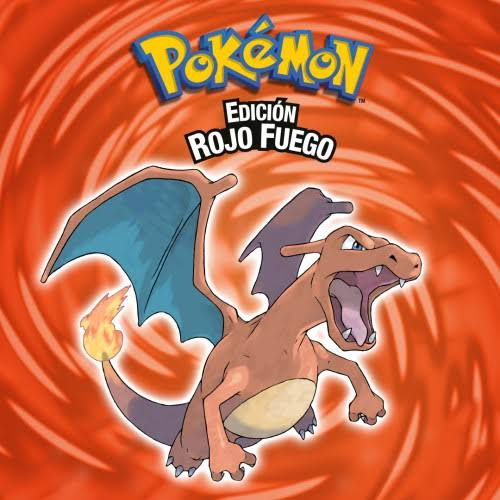
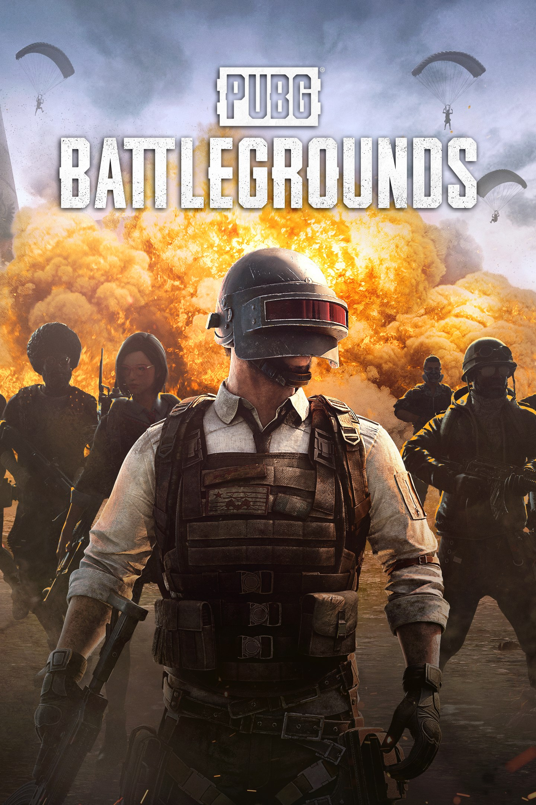
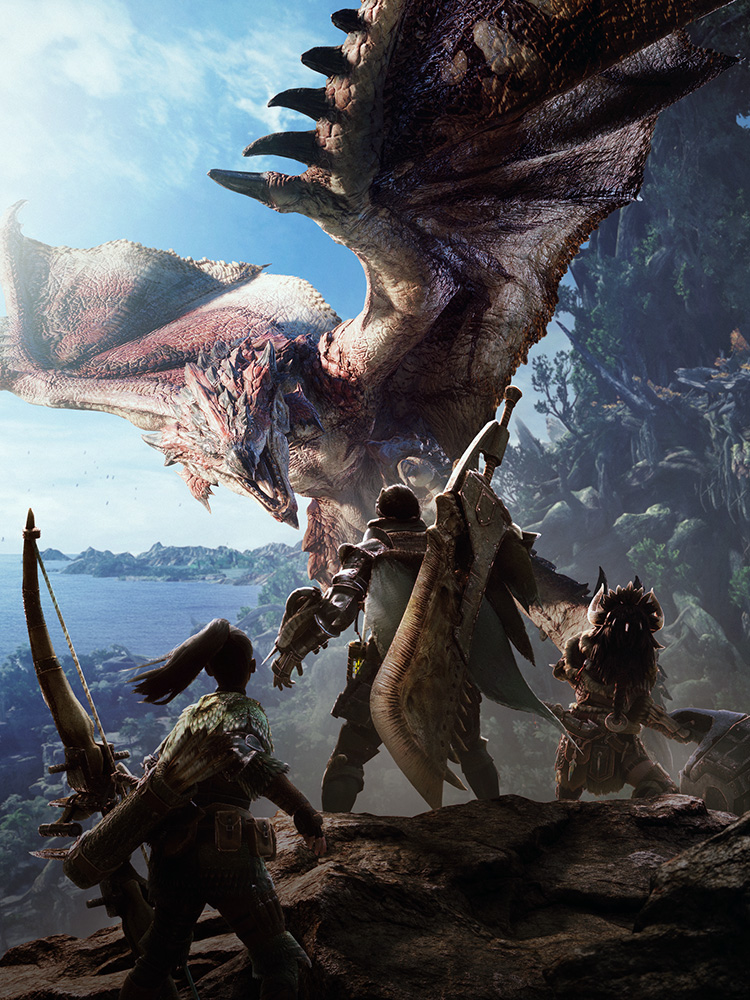

Nuestra historia
En 1987, José Antonio decidió comenzar un emprendimiento personal llamado "El Dardo Loco", con la idea de brindarle risas y diversión a las personas de su pueblo en Barcelona. Hoy día, 40 años después es el fundador de más de 100 tiendas a nivel mundial y uno de los proveedores más importantes del mundo cuando se trata de videojuegos.
Productos destacados (los más vendidos de la semana)
- Pokemon Rojo Fuego
- PUBG
- Monster Hunter

Precio anterior: 15.000$ - Precio actual: 13.900$

Precio anterior: 25.000$ - Precio actual: 11.760$

Precio anterior: 27.000$ - Precio actual: 22.400$